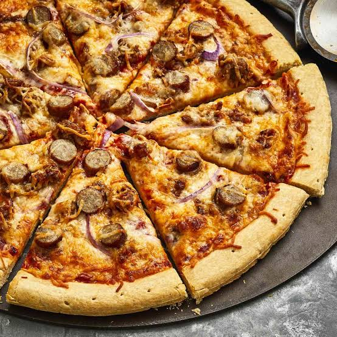

Home
Breakfast Sausage White Cheese Pizza

This pizza is simple to make and guaranteed to impress.
Ingredients
- 12 ounces ground Italian sausage
- 1 tablespoon butter
- 1 cup chopped onion
- 1 (12 inch) prepared pizza crust
- 1 1/4 cups pizza sauce
- 12 ounces shredded mozzarella cheese
- 8 ounces pork sausage links, sliced
- 12 ounces shredded Monterey Jack cheese
Steps
- Preheat oven to 350 degrees F (175 degrees C).
- Place sausage in a large, deep skillet. Cook over medium-high heat until evenly brown. Drain, crumble and set aside.
- Over medium-low heat melt butter in a large saucepan. Add onions. Cook slowly, stirring occasionally, until onions are soft.
- Place crust on pizza pan. Spread pizza sauce over crust and add Italian sausage. Cover with mozzarella cheese and place sliced links over cheese. Spread Monterey Jack cheese on top of links.
- Bake in preheated oven for 20 to 25 minutes, until golden.